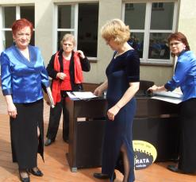

A tymczasem w Cameracie...
.
2012-06-03
Ciepłe niedzielne popołudnie. Spotykamy się o 14.45 w Koźmicach. O 16.00 dajemy koncert. Zaproszonymi gośćmi są: Konrad Szota i Wiesław Popiołek – artyści Opery Krakowskiej, młoda utalentowana skrzypaczka Anna Korczyńska oraz pianistki Agnieszka Korczyńska i Małgorzata Westrych. 
a tu niespodzianka i to niezbyt miła, instrument szkolny, który ma być użyty na próbie, ma uszkodzone klawisze. Niektóre wpadają i nie podnoszą się, językiem muzycznym określono „ nie repetują”.
No . . . zepsuty.
No cóż? chór i zaproszeni goście – soliści . . . do roboty, nie ma „zmiłuj”, pani dyrygentka nie odpuści. Trzeba zaczynać próbę z tym co mamy, drugi instrument, jeszcze w drodze a czas nagli, będzie na koncert. Zaczynamy próbę przy „jękach” pani Małgorzaty Westrych, która musi nam akompaniować. Pokazuje nam swoje 10 palców i mówi „Szkoda moich żywicieli na taki instrument” :)
Chór cały „uchachany” słucha próby solistów. Koniec próby. Instrument też już przyjechał, jest już ustawiony, zaczynamy koncert . . . śpiewa pięknie chór, pani dyrygent Izabela Szota i oczywiście nasi zaproszeni soliści Wiesław Popiołek i Konrad Szota. Wspaniale zagrała na skrzypcach Anna Korczyńska przy akompaniamencie Agnieszki Korczyńskiej. Koncert zakończył się wspólnym śpiewem wszystkich wykonawców i koźmickiej publiczność, która z wielką ochotą dała się "porwać" we wspaniały świat muzyki. I koniec, emocje opadają, widzowie zadowoleni jeszcze długo biją brawo. Zbieramy się do wyjazdu i umawiamy się na małe „co nieco” i obgadanie występu. Troszkę mało krzeseł, ale dajemy radę.
KLIKNIJ I ZOBACZ Zdjęcia z koncertu w Koźmicach

© Stowarzyszenie Muzyczne Chór Camerata Wieliczka